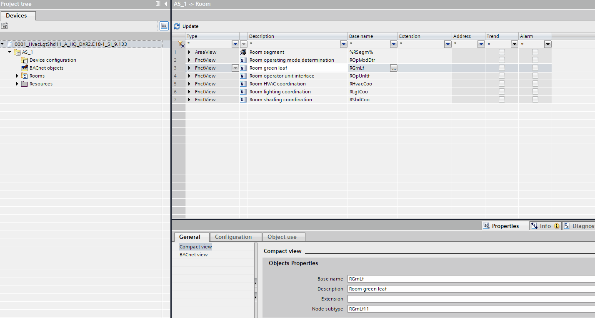

Working with resources
您可以使用 TX 和板载 I/Os 和 KNX PL-链接设备（数据点）位于Resources通过将它们添加到图表中Programming editor.
Work with resources

有两种方法可以将数据点添加到图表中：
- In Resources, select a data point and move it onto an open chart via drag-and-drop.
- In Resources, right-click a data point and select Open in program.